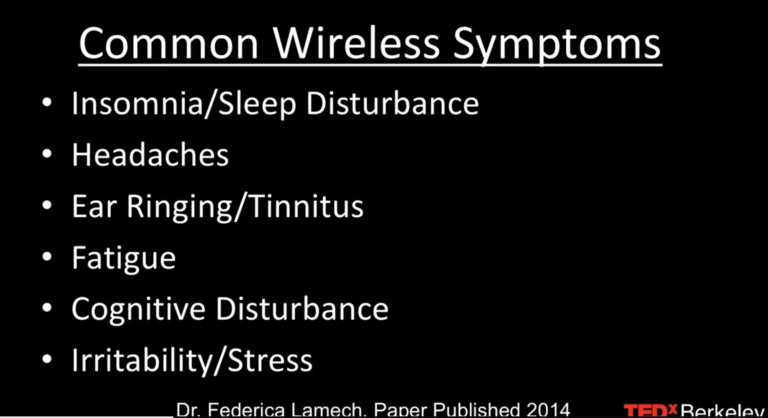

Our Thirst For Technology & Innovation Comes At A Price
Pollution control is a top priority for most people these days, but what about a type of pollution that’s invisible, silent and odorless?
Current estimations gauge that 5 billion people in the world use a cell phone – using apps that send and receive electromagnetic radiation or EMR (also known as EMF).
With the rapid advancement of wireless technology, many experts claim that EMF is dangerous to our health.
Common symptoms of sensitivity to EMF:

What is EMF radiation or RF radiation?
There are different kinds of radiation. Ionizing radiation is the kind that X-Rays use. It is also the kind that causes cancers after a nuclear fallout. Electromagnetic radiation is a non-ionizing radiation. The kind that your microwave oven emits. Our cell phones, tablets, WIFI routers, smart gadgets and smart meters are all emitting and receiving microwave radiation also known as RF or EMF radiation.
Wireless technology, receives and emits radiation with less than 2 watts of power. This causes the device to warm slightly, significantly less than a microwave oven (1000) watts.
The experts sounding the alarm on the harm of RF exposure are not doing so because of the warmth the devices give off, but from the growing evidence that suggests that continuous use of our phones come with side effects.
“We know that RF radiation from 3G or 4G are associated with a wide variety of health problems” – Dr David Carpenter, FMR Director, NY State Department Health Labs
According to Prof, Dr Olle Johansson, Sweden:
“We have carried out studies on rats where we exposed their brains to RF frequencies for one minute, at a very low exposure level – much lower than the frequency of a cell phone. And they all experienced leakage from the blood-brain barrier”.
The blood-brain barrier is a filtering system in the brain that blocks the passage of certain substances. Once compromised, it becomes porous – allowing bacteria and other toxins to infect the brain tissue. Resulting in inflammation or death.
The barrier can be compromised by blunt force trauma, high blood pressure, developmental disorders, and exposure to radiation… including microwave radiation. This leakage is more common with children because a child’s skull is much thinner.
In a journal of Microscopy and Ultrastructure, authors conducted a meta-analysis of peer-reviewed cell phone studies from 2009 to 2014, concluding that children and unborn babies do face a greater risk of bodily damage resulting from microwave radiation, given off by wireless devices.
The brain of a child absorbs twice as much as an adult.
“The weight of the evidence demonstrates clearly that exposure to radio frequency waves causes disease… the evidence is strongest for cancer.” – Dr David Carpenter
France and Russia have the worlds longest research history on the health effects of microwave radiation. They have both banned WIFI from schools. [Check out my recent post: The alarming links between behavioral disorders & EMF]
One reason why researchers test on rats is because of their genetic and biological and behavioral characteristics closely resemble that of humans. And many symptoms of human conditions can be replicated in mice and rats.
Leith Southford is the leading neurosurgeon at Lund University Hospital and chairman of the department of neurosurgery. Since the late 1990’s he’s led a team of researchers who’ve exposed thousands of laboratory rats to cell phone radiation, showing that even a small amount can damage the blood-brain barrier. His results have remained consistent and he calls the potential implications of his results terrifying.
A group of Chinese scientists replicated the study in 2015, with the same results.
Many are asking if RF radiation is so harmful, why aren’t we seeing more brain tumors or brain cancer?
This fails to consider ‘latency’, which is the time that elapses between the time of exposure and the diagnosis of cancer.
“Studies from the Hiroshima bomb show that brain cancer didn’t show up at all until 40 years after the bombing occurred” – Dr Devra Lee Davis (2013)
“If there was a real hazard out there, it could be another 15 years before we see it. Think about the billions of people being exposed to cell phone RF radiation on a regular basis”- Dr David McCormick
A study in Sweden, published by Environmental research and public health reported that brain tumors increased from 2007 to 2015. Saying that wireless phones should be considered in relation to the change of incidents rates.
According to the journal of environmental health: Long term use of mobile phones shows an almost doubling of the risk of brain tumors. The journal states that RF radiation should be considered a carcinogen.
In 2016, findings from a massive 30 million dollar study by the National Toxicology program on the hazards of cell phone use – were made public.
NTP uses four categories to summarize the evidence that a substance may cause cancer:
– No evidence
– Equivocal evidence
– Some evidence
– Clear evidence
Researchers found *Clear Evidence* of glioma tumors.
Is RF radiation “the new smoking?”
A new study shows that using your phone in poor cell reception can increase your radiation exposure by 10,000 times.
Scientists at the California Institute for public health showed that the lower your cell phone reception, the higher the radiation.
“With a weak signal, your phone emits a lot more radiation to make the connection with the cell phone tower, that’s why I strongly urge people not to use your cell phone in your car or in your elevator or in public transit because you’re not only exposing yourself, but everyone around you.”- Dr Joel Moskowitz Director, UC Berkely center for family health
We are more saturated in EMF than ever, with different devices simultaneously emitting radiation at once. Think about your smart electricity meter that’s connected to your house, while you’re inside using your phone, while watching your smart TV, with your router in the same room, with your tablet charging that’s sending and receiving radio waves to the tower outside your home 900 times a second… that is sitting right next to you.
When you sign in to your WIFI you’ll see a dozen different WIFI signals from your neighbors – those signals are adding even higher levels of radiation to what you’re already being exposed to.
In normal mode, an iPhone registers 286 millivolts per meter… but when you turn on Bluetooth, WIFI and make a call, now the radiation jumps to a reading of nearly 6 volts per meter… that’s 20x times more radiation!
Warnings buried deep in the small print
Here is a statement from Apple buried deep in the fine print in the settings of your iPhone:
“To be sure that human exposure does not exceed the FCC guidelines, always follow these instructions… keep iPhone at least 15 mm (5/8 inch) away from the body, and only use carrying cases, belt clips, or holders that do not have metal parts and that maintain at least 15 mm (5/8) inch separation between the iPhone and the body.”
To view the information on your iPhone go to Settings > General > About > Legal > RF Exposure.
One in six American couples can’t have a child when they want to
Over 300 studies have been linked to EMF radiation and fertility issues.
When a couple first comes into a fertility clinic, the first thing the doctor tells the man is: “Keep your phone out of your pocket at all times” – because the data on cell phone radiation and its effects on the testes is rock solid.
With this amount of scientific information, it’s no wonder that insurance companies exclude coverage for EMF radiation. Its because EMF is considered a pollutant, just like cigarette smoke, chemicals and asbestos.
Big Telco needs you to ‘trust them’
Beware of astroturfing: A recent “study” in Australia reported no rise in brain tumors associated with the rise of cell phone use. Only to be debunked after it was discovered that the study was researched by pro-industry lobbyists with a clear bias… it was revealed that the findings had been grossly ”cherry picked”.
NCTA and CTIA are the biggest telco lobbying groups in America. It’s their job to ensure that the public continues to believe that wireless devices are perfectly safe.
The leaders and high members of the Federal Communication Commission (FCC) have been a revolving door for lobbyists of big telco.
Former FCC chairman Michael Powell was, and still is President and CEO of NCTA
In 2009, Merideth Atwell-Baker was brought onto the FCC board… she was, and still is the chief executive officer of CTIA.
CTIA is currently in a battle in court over Berkeley’s new”right to know” law regarding EMF warnings posted in cell phone stores.
In 2013 President Obama appointed Tom Wheeler to the FCC… former CEO of both NCTA and CTIA.
Wheeler was quoted saying:
“We need to speed the deployment of 5G immediately here on our shores, turning innovators loose is far preferable to committees and regulators to define the future. We won’t wait for the standards”
He also said:
“Technology should drive the policy… not the policy driving the technology”.
Start taking measures now
Obviously, it’s impossible to completely protect yourself from the dangers of EMF radiation, but you can reduce it.
Bottom line:
– Never use Bluetooth headphones or earpods
– Never wear smartwatches
– Turn off your WIFI router at night before you sleep
– Keep your bedroom free from wireless and electronic devices while you sleep
– Never purse your phone to your ear
– Don’t carry your phone in your pocket
– If you have a smart electricity meter, call your power provider to change it back to analogue
If you’re concerned that you’re sensitive to EMF radiation, or you would like to learn more about protecting your family from this unsuspecting carcinogen – then be sure to check out ‘The non-tinfoil guide to EMFs‘.